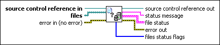

SCC File Status VI
Owning Palette: Source Control VIs
Requires: Professional System
Returns the current source control status of specified files, including whether a file is in source control, whether it is checked out, and whether it is the latest version available in source control.

 Add to the block diagram Add to the block diagram |
 Find on the palette Find on the palette |